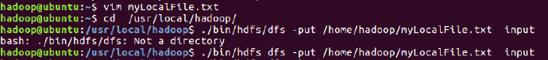
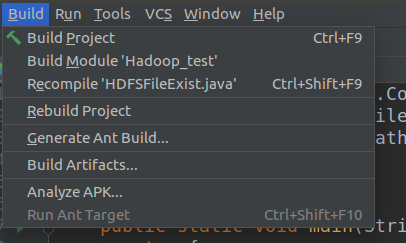

Hadoop操作
目录操作
在操作之前，需要在hadoop根目录下创建与Linux用户同名的user目录
./bin/hdfs dfs -mkdir -p /user/hadoop之后，所有的文件都默认放入这个目录下面，很多命令与Linux命令一致，比如查看当前文件夹：
这个
input是这样创建的：./bin/hfs dfs -mkdir input若
/input，表示在HDFS的根目录创建input目录
文件操作
本地->Hadoop
将本地文件移动到hadoop的input文件夹下：

查看Hadoop的input文件夹下的文件：
Hadoop->本地
同时，也可以将Hadoop上的文件下载到本地：

Hadoop之间
在Hadoop的文件之间进行传输，与Linux上文件传输无异
注意，要使用
-cp命令，一定要确保目标文件夹存在：
配置IDE环境
下载IDEA
首先在官网下载IDEA到
Download：然后执行解压命令，解压到
/usr/localsudo tar -xvf ideaIU-2018.2.4.tar.gz -C /usr/local进入该目录，执行
idea.sh，进行安装：
导入依赖包
/usr/local/hadoop/share/hadoop/common目录下的：hadoop-common-xxxx.jarhadoop-nfs-xxx.jar
/usr/local/hadoop/share/hadoop/hdfs/hadoop-hdfs-client.xx.jar(3.xx版本需要新加入)/usr/local/hadoop/share/hadoop/hdfs目录下：hadoop-hdfs-xxx.jarhadoop-hdfs-nfs-xxx.jar
usr/local/hadoop/share/hadoop/common/lib目录下的所有JAR包/usr/local/hadoop/share/hadoop/hdfs/lib目录下的所有JAR包
设置Global Libraries
- 在setting里面设置好Global Libraries后，每次新建工程，若需要这些库（例如Hadoop库），那么需要添加依赖：
- 可以参考这里
运行Hadoop文件
测试文件
以下文件用于测试HDFS中是否存在一个文件。
import org.apache.hadoop.conf.Configuration;
import org.apache.hadoop.fs.FileSystem;
import org.apache.hadoop.fs.Path;
public class HDFSFileExist {
public static void main(String[] args){
try {
String fileName = "test";
Configuration conf = new Configuration();
conf.set("fs.defaultFS","hdfs://localhost:9000");
conf.set("fs.hdfs.impl","org.apache.hadoop.hdfs.DistributedFileSystem");
FileSystem fs = FileSystem.get(conf);
if(fs.exists(new Path(fileName))){
System.out.println("file exist!");
}else{
System.out.println("file not exist");
}
}catch (Exception e){
e.printStackTrace();
}
}
}
这里，需要检测的文件名称问test，没有给出路径全称，则表示采用了相对路径，就是当前登录Linux系统的用户Hadoop，在对应的目录下是否存在test，也就是/usr/hadoop目录下是否存在test文件。
结果
在IDEA中直接运行，可得到如下结果：
将项目打包成JAR包
在
IDEA中，右键项目，选择open module setting，进入Artifact，点+号：
选择
with dependencied，新建一个：选择
Main class，其余默认然后build artifact：

build之后，在对应文件夹中找到打包的JAR包：
在本地尝试是否打包成功：
出现如图结果就表示成功！